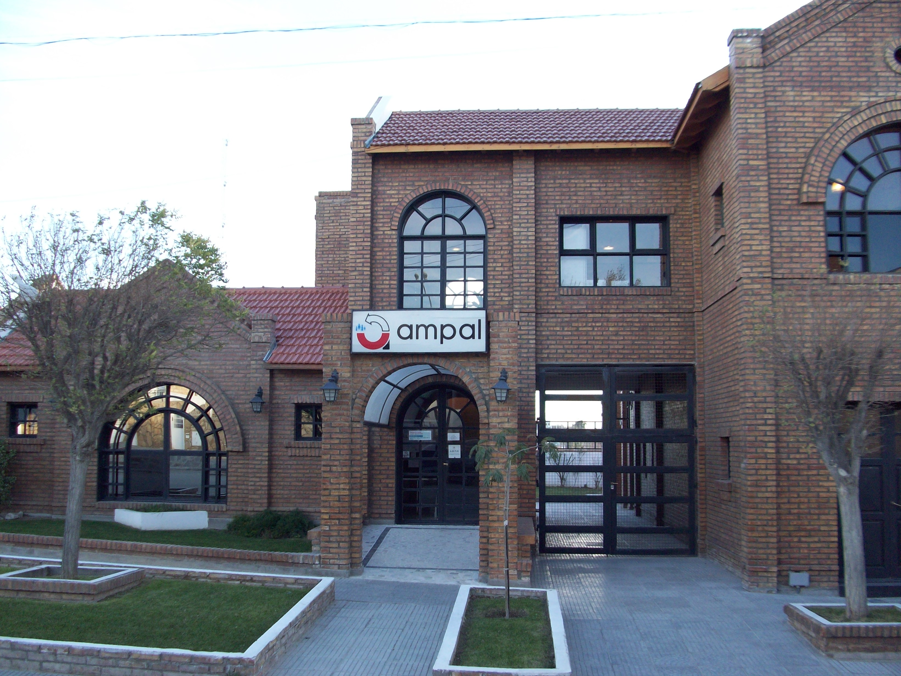
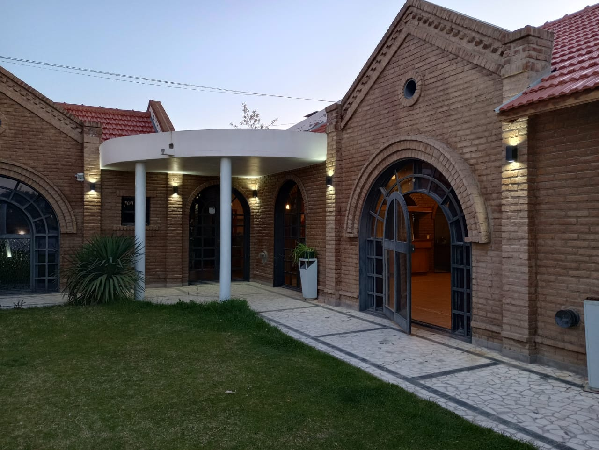
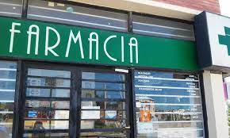
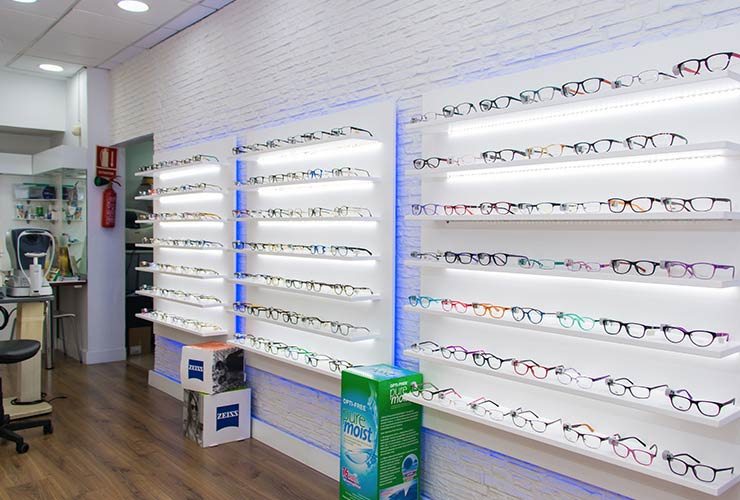
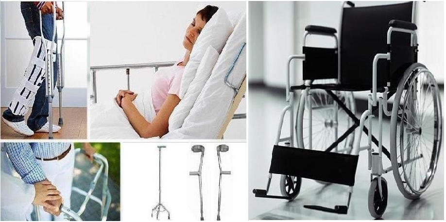

Inicio

Nuestra mutual es una asociación constituida en 1976 sin fines de lucro, por personas inspiradas en la solidaridad con el objeto de brindar ayuda recíproca para satisfacer las necesidades de los socios, ya sea mediante asistencia médica, farmacéutica y financiera, así como cualquiera otra que tenga como objetivo alcanzarles bienestar material y espiritual.
En la Argentina, las mutuales se rigen por la ley Nº 20.321 y por diversas resoluciones que dicta el órgano competente en la materia: el Instituto Nacional de Asociativismo y Economía Social, INAES. Tienen gran importancia en el campo de la Salud, los Servicios Sociales, así como también constituyen una red de apoyo económico para las pequeñas y medianas empresas. Las mutuales son “empresas sociales”. Constituyen uno de los pilares de la Economía Social. Están en condiciones de competir con las empresas privadas en cuanto a eficiencia y seriedad, así como también son capaces de proporcionar servicios donde el Capitalismo considera poco rentable hacerlo.
Historia

En julio de 1974 Aluar comenzó la incorporación masiva de personal provocando gran afluencia de familias hacia nuestra ciudad.
Puerto Madryn no estaba preparada para abastecer la nueva demanda de artículos de consumo familiar y tampoco podía cubrir adecuadamente las contingencias referidas a la salud.
Con miras a solucionar uno de los problemas Aluar comienza la instalación de una proveeduría en un galpón existente frente a la manzana 154 del sector 1 del Barrio de la Empresa. Esta serviría de reguladora de precio máximos al comercializar productos a costos inferiores a los promedios de plaza.
El concesionario fue el Sr. Ricardo Antín y su proveeduría fue el antecendente histórico de lo que conoceríamos luego como Supercoop (El Hogar Obrero). El Sr. Oscar Carbone impulsaba la creación de una cooperativa o mutual que tuviera a
cargo el control de la proveeduría ademas de extenderse a otros rubros del quehacer comunitario que ya se estaban desarrollando tales como créditos, ayudas varias, pasajes, etc.
Entre el invierno y la primavera siguientes se llevaron a cabo reuniones donde se decidieron la integración de la mutual, sus objetivos y todo lo demás concerniente a su creación.
La asamblea Constitutiva integral tuvo lugar el 22 de diciembre de 1976 fecha que hoy recordamos como aniversario de la mutual. En esta se dio cuenta de todo el proceso de formación, se aprobó el estatuto social, se fijo su nombre de AMPAL, se establecieron los objetivos y se procedió a la elección del primer Consejo Directivo:
Enrique Baldoni, Domingo Miranda, Jose Garavano, Angel Calerame, Jaime Riera, Ricardo Hlywy, Jose Sala, Roberto Berazategui, Rodolfo Playan, Luis Gomez, Edgar Trezza, Juan H. Manino, Oscar Guibellini, Jose Slimak, Cristina Litvak y Graciela Fennen.
Estos nombres junto a los asistentes a esta primera asamblea quedaran en el recuerdo como verdaderos pioneros con espíritu solidario.
El 12 de septiembre de 1977 Ampal fue inscripta en el I.N.A.M. que la reconoce y autoriza a funcionar como tal y en el registro nacional de Mutualidades con Matrícula Nro. 29 de la provincia del Chubut.
Salon de eventos
Contamos con un salón de eventos con capacidad de 100 personas. Cuenta con mantelería, vajilla y todo lo necesario para tu evento

Farmacia
Nuestra farmacia posee los mejores precios de la ciudad, con una gran variedad de medicamentos, perfumería y accesorios

Optica
Lentes recetados y para sol. Realizamos lentes de seguridad para su empresa con un alto grado de resistencia. Trabajamos con las marcas lideres del mercado

Ortopedia
Contamos con un amplio stock de elementos, tales como sillas de rueda, muletas, inmovilizadores, botas walker y demás

Contacto